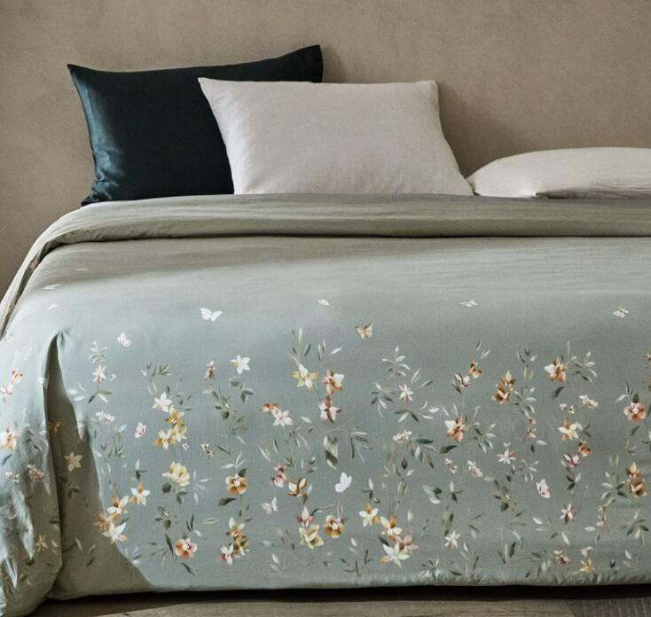
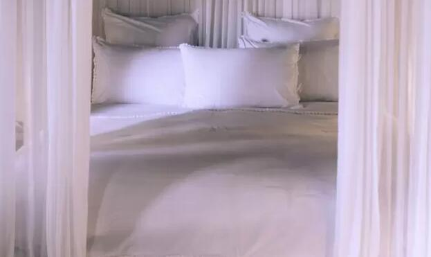
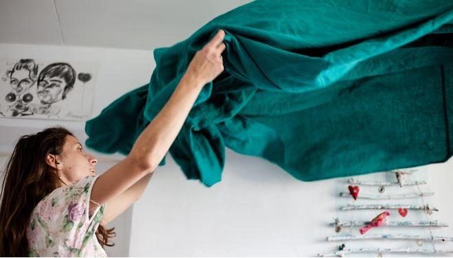

CINCO JUEGOS DE SÁBANAS PRECIOSOS DE LAS NOVEDADES DE PRIMAVERA DE ZARA HOME
Después de las rebajas las firmas lanzan sus nuevas colecciones y es una delicia respirar ya aires de primavera en pleno febrero. Más colores, tejidos más frescos, flores... Zara Home también propone para tu dormitorio un soplo de primavera con su nueva colección de ropa de cama para esta estación llena de modelos florales. Ramas, florecillas silvestres, peonías, incluso delicadas mariposas, se entremezclan en un jardín único que llega dispuesto a vestir tu cama con un elegante colorido.
Las sábanas más exclusivas: Cuántos hilos tienen y qué cuestan
A la hora de dormir, muchas personas buscan los mejores materiales para colocar en sus camas y así conciliar el sueño y disfrutar de un plácido descanso. Por esto, es necesario contar con una buena funda de almohadas y que las sábanas sean de un material suave.
Las sábanas son muy necesarias a la hora de dormir para mantener la temperatura corporal en el cuerpo y tener un buen descanso que permita recuperar todas las energías. En la mayoría de los casos, la ropa de cama está hecha de algodón o poliéster, los cuales tienen funciones diferentes y varía la forma en la calidad y funcionamiento.
Cómo secar las sábanas y toallas para que no cojan olor a humedad
¿Cuándo se acaba el intenso frío que azota Andalucía? Bajan las temperaturas, sacamos los abrigos y la sensación es casi siempre la misma. Qué bien, un poco de frío hacía falta. Como cuando llueve. Pero cuando el poco se prolonga demasiado tiempo la mente y el cuerpo de la mayoría de andaluces vuelve a reclamar el sol y el calorcito. Ese que te permite caminar sin sentir dolor en los pies o con las manos en los bolsillos (y no para sacar la cartera). Estas semanitas de frío polar han servido también para dificultarnos ciertas tareas del hogar. Como tener perfectamente preparadas nuestras sábanas y toallas a la hora de salir de la ducha o dormir cómodamente en nuestros dormitorios ¿Por qué? El frío dificulta el secado de nuestras prendas y nos obliga a redoblar nuestra habilidad y esfuerzo en dichas lides si no queremos seguir sintiendo la humedad en sus tejidos ¿Cómo secar las sábanas y toallas para que no cojan olor a humedad?